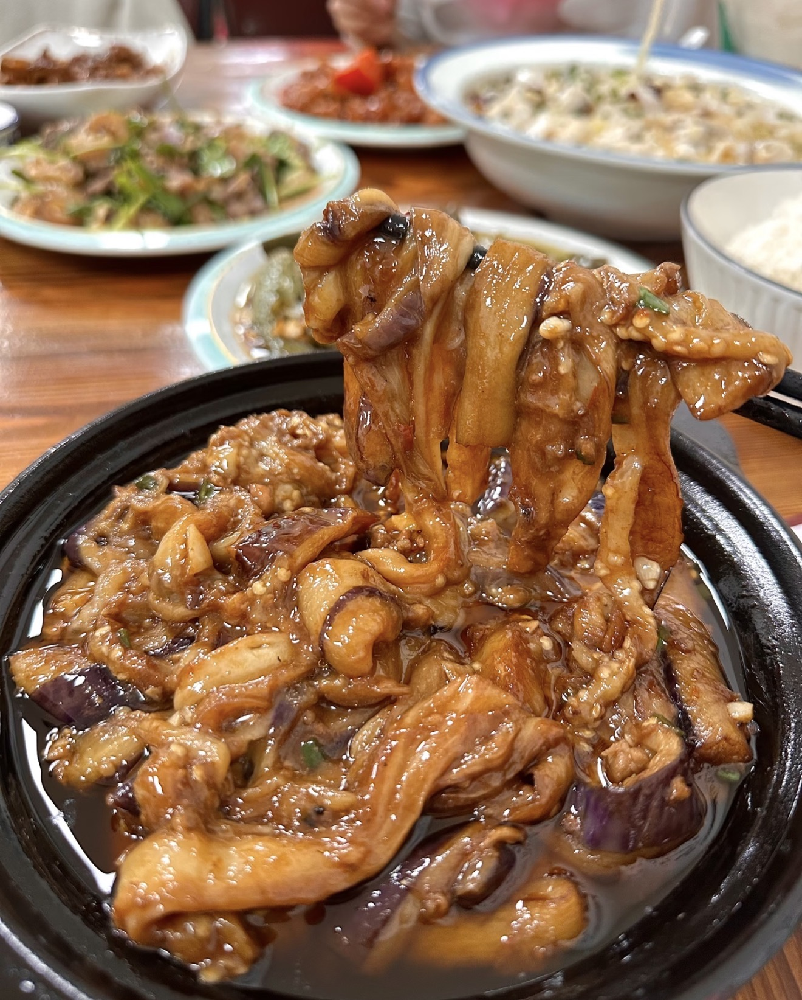

Yuxiang Eggplant Claypot
鱼香茄子煲 — A rich Cantonese-style claypot eggplant dish with savory garlic sauce and minced pork.
Ingredients
- Chinese eggplant (2)
- Ground pork (100g)
- Garlic (3 cloves, minced)
- Ginger (minced)
- Scallions
- Soy sauce (1 tbsp)
- Dark soy sauce (1 tsp)
- Oyster sauce (1 tbsp)
- Sugar (1 tsp)
- Vinegar (1 tsp)
- Cooking wine (1 tbsp)
- Water or stock (100ml)
- Cornstarch slurry
- Cooking oil
Directions
- Cut eggplant into strips and soak in salt water for 10 minutes.
- Fry or pan-sear eggplant until softened and slightly golden. Set aside.
- Heat oil in a pan and sauté garlic and ginger until fragrant.
- Add ground pork and cook until browned.
- Add soy sauce, dark soy sauce, oyster sauce, sugar, vinegar, and cooking wine.
- Pour in water or stock and bring to a simmer.
- Add eggplant and toss to coat with sauce.
- Thicken with cornstarch slurry.
- Transfer to a claypot and simmer for 2–3 minutes.
- Garnish with scallions and serve hot.